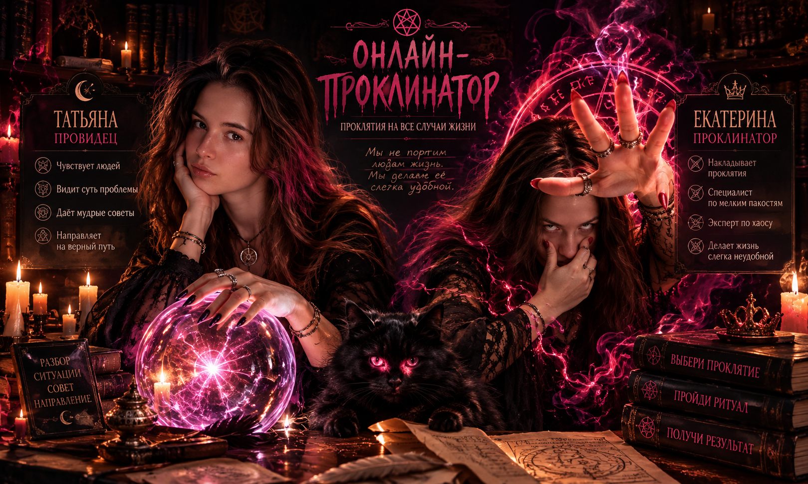

Судьба или проклятие?
Две ведьмы. Один портал. Ноль ответственности за остывший чай.
С ЧЕМ ТЫ К НАМ ПРИПЁРСЯ, СМЕРТНЫЙ?
Рассказывай, кого жизнь недостаточно наказала. Мы тут, к сожалению, специалисты.
Выберите свою ведьму
🐈 Секретный отдел кота-аудитора
«Мяу. Ваше заявление рассматривается. Возможно, я на нём посплю».
СУД ВЕДЬМ
Ты обвиняешь. Татьяна разбирается. Екатерина с удовольствием выносит приговор.
📜 Подать иск в преисподнюю
Только шуточные обвинения. Не публикуй чужие личные данные, угрозы или реальные компрометирующие сведения.
☠️ Каталог безобразий
Сертифицированные бытовые пакости. Магия ненастоящая, кринж гарантирован.
Выбери пакость
Екатерина ждёт заявку, Татьяна уже осуждает.
🎁 Бонусы канцелярии
🐈 Кот-аудитор: одобряет случайные заявки.
↩️ Кармический бумеранг: иногда проклятие возвращается.
🍷 Алко-режим: исключительно шуточные приключения.
🪄 VIP «Да чтоб тебя»: двойная печать ведьм.
🔮 Кабинет Татьяны
Она чувствует, когда вы говорите «всё нормально», хотя всё совершенно не нормально.
Задайте вопрос шару
🖐️ Кабинет Екатерины
Официальный приём заявлений на мелкие бытовые неудобства.
⚖️ Магический консилиум
Татьяна видит суть. Екатерина делает выводы. Иногда слишком быстро.
📚 Архив канцелярии
Ваши магические документы хранятся только на этом устройстве.